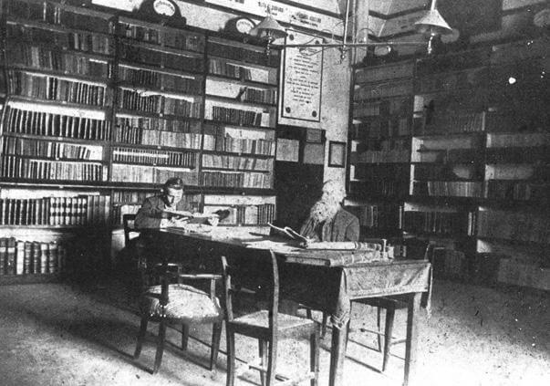

CELEBRI VIGNOLESI
ENTRA

Fotografia risalente al 1900 ca.: Alessandro Plessi (1824-1907) e il figlio Renato (1878-1954) nella Biblioteca Comunale di Vignola,
allora situata in un vasto ambiente del primo piano della rocca, la Sala dei Tronchi d’Albero. Fonte: Raccolta famiglia Plessi.